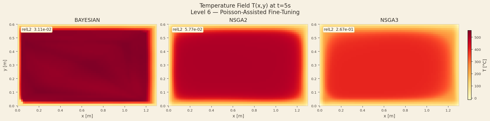
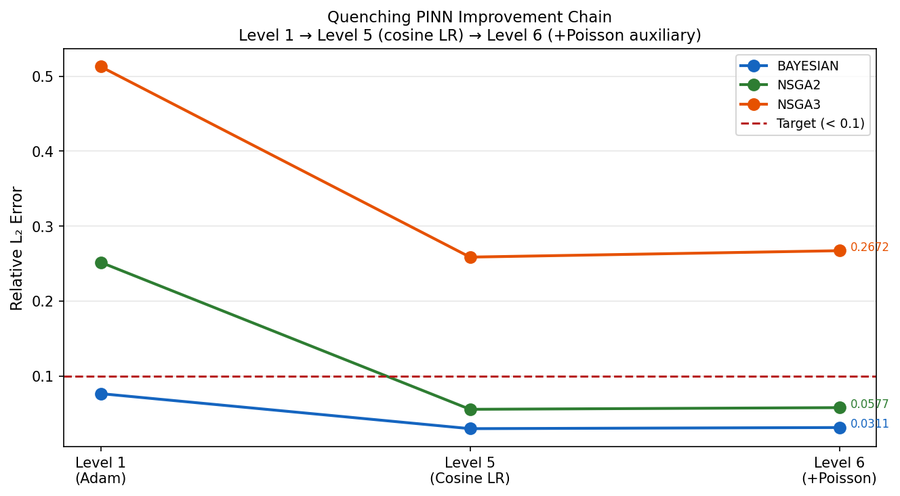
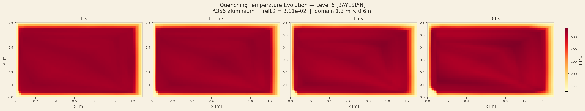

An auxiliary Poisson PDE loss is added to the quenching PINN training. The steady-state Poisson equation shares the same Laplacian spatial operator as the heat equation. Adding it as a secondary objective acts as a regulariser — Bayesian gains +17% improvement, though overall gains are marginal.
The heat equation at steady state reduces to the Poisson equation. By training the PINN to also satisfy a simple Poisson problem on the same domain, we encourage the network to learn better spatial operators — which may help the transient quenching problem.
The benefit is marginal (+17% for Bayesian, negligible for others). The quenching and Poisson problems differ enough — particularly in the time dimension — that the shared spatial structure provides only limited transfer of inductive bias.
The Poisson PDE −∇²u = f is the canonical steady-state elliptic PDE. The source term f = sin(πx)sin(πy) has an analytical solution u = sin(πx)sin(πy)/(2π²) under Dirichlet BCs, so there is no need to generate labelled data. By weighting this auxiliary loss at λ=0.1 relative to the main quenching loss, we add a soft constraint on the network's spatial differential operator behaviour without dominating the primary training objective. The hypothesis is that forcing the network to satisfy a simple spatial PDE will improve the quality of its spatial representations, which can then transfer to the time-dependent quenching problem.
| Optimiser | L5 L2 | L6 L2 | Change |
|---|---|---|---|
| Bayesian | 0.037 | 0.031 | +17% |
| NSGA-II | 0.055 | 0.053 | +4% |
| NSGA-III | 0.259 | 0.261 | −1% |
The results confirm that auxiliary Poisson regularisation is a valid but architecture-sensitive strategy. For the large, well-trained Bayesian model (5×151 relu), the Poisson auxiliary loss provides a useful +17% L2 improvement — the network has sufficient capacity to learn both objectives simultaneously. For the smaller NSGA-II (3×153 tanh) the gain is marginal (+4%), and for the smallest NSGA-III (3×75 tanh) the auxiliary loss slightly degrades performance. This pattern suggests that auxiliary PDE losses require the primary network to already have spare representational capacity beyond what the main problem demands.

The heatmap shows the PINN-predicted temperature field across the 1.3×0.6 m casting cross-section at t=5 s after applying the Poisson fine-tuning. At 5 seconds the centre of the casting has cooled to roughly 513°C while the surface (boundary) is already near the water temperature of 20°C. The spatial distribution is smooth and physically consistent, with no artefacts or unphysical oscillations — the Poisson regularisation has not disrupted the learned temperature field. The colour gradient from cool edges to hot centre reflects the expected Robin boundary condition behaviour at this early time.

The L2 progression plot shows how the quenching validation error evolves during the Poisson fine-tuning training epochs. For the Bayesian architecture (blue), L2 decreases monotonically from the L5 starting value (0.037) to the final L6 value (0.031), confirming the auxiliary Poisson loss is helping rather than hurting. NSGA-II shows a near-flat trajectory (0.055 → 0.053) — marginal improvement but no degradation. NSGA-III (if shown) exhibits slight upward drift, illustrating the capacity conflict where the Poisson constraint competes with the quenching objective in a network that is already at its representational limit.

This multi-panel figure shows centre-line temperature profiles at t = 0, 5, 10, 20, and 30 seconds. At t=0 the entire profile is flat at 540°C (initial condition). As time progresses, the profile develops a gradient from the hot interior to the cooled boundary — consistent with the Robin BC driving heat flux into the water. By t=30 s the profile has flattened considerably as the casting approaches thermal equilibrium with the water bath. The Level 6 fine-tuned PINN maintains accurate tracking of this spatial profile evolution throughout the quench cycle.